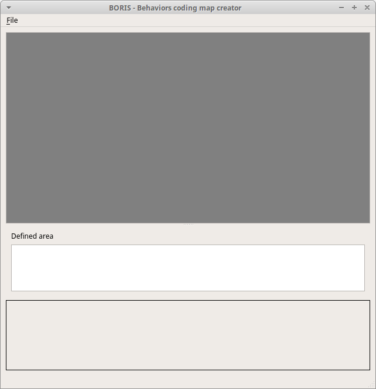
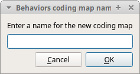
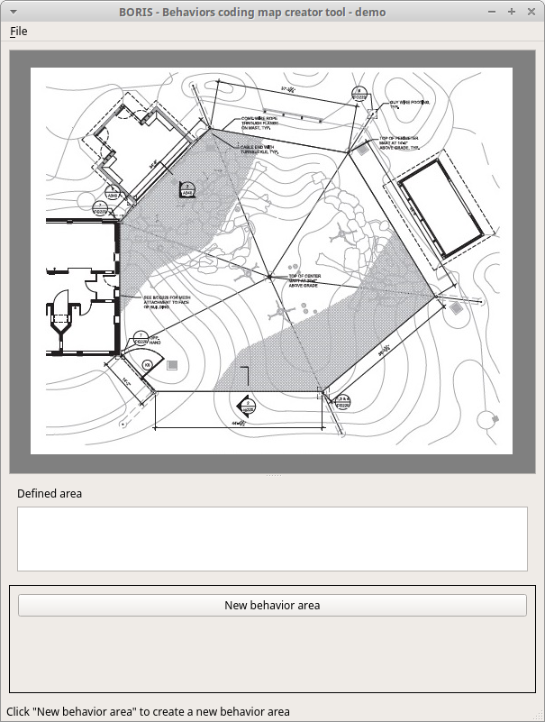
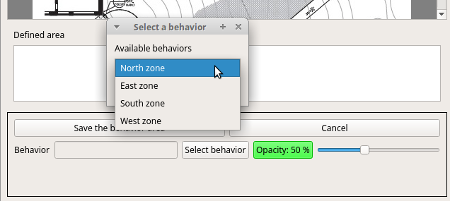
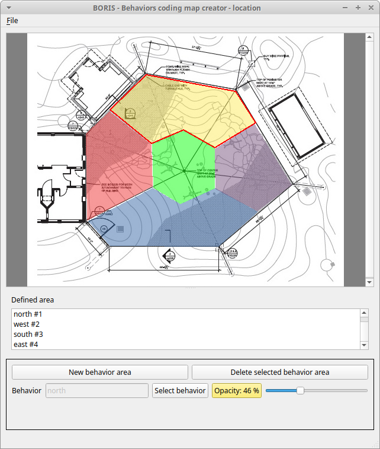
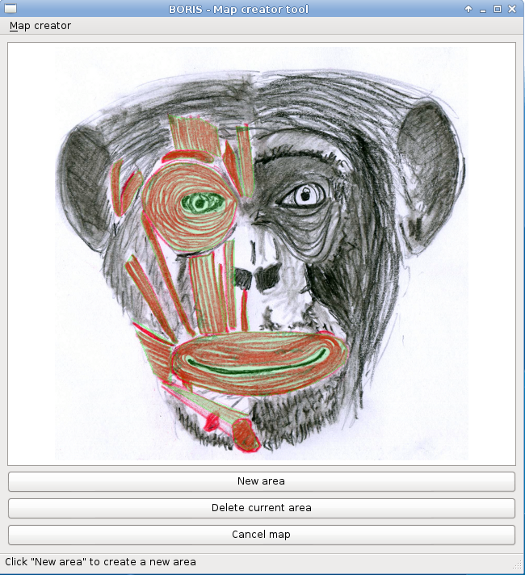

Coding map#
A coding map is a bitmap image with user-defined clickable areas that will help to code for behaviors or modifiers for a behavior.
2 types of coding maps are available:
- Behaviors coding map
- Modifiers coding map
The Behaviors coding map#
BORIS allows creating a Behaviors coding map using the Map creator tool (Tools > Create a coding map > for behaviors).
A Behaviors coding map can be created only if you have defined behaviors in your ethogram.
Creating a Behaviors coding map#
To create a new Behaviors coding map launch the Behaviors coding map creator
Tools > Create a coding map > for behaviors).
A new window will open

File > New behaviors coding map
Enter a name for the new Behaviors coding map

Loading a bitmap for a behaviors coding map#
Click the Load bitmap button in the bottom of the window and select a bitmap image (PNG and JPEG formats are accepted).
If the size of your bitmap image is bigger than 640 x 640 pixels BORIS will resize it to 640 x 640 pixels keeping the aspect ratio and store the resized version in the coding map file.
The bitmap will be displayed

Adding areas corresponding the behaviors#
Click the New behavior area button in the bottom of the window and select a behavior by clicking on the Select behavior button.

The available behaviors are taken from the ethogram of the current project.
Click on the bitmap to define the vertex on the area that will code the selected behavior. Close the area by clicking again on the first point.
The color of the new area can be changed using the Opacity button. The opacity can be changed (from 0 to 100%) using the slider.
Save the behavior area by clicking on the Save the behavior area button
The area will be added to the Defined area list
You can add more area and also add more than one area for a same behavior. Two or more areas can overlap. In this case all corresponding behaviors will be triggered.

Add the Behaviors coding map to the current project#
File > Add coding map to project
The coding map will be added to the current project
You can add a Behaviors coding map to the current project from a file containing the coding map:
(File > Edit project > Behaviors coding map > Add a behaviors coding map )
Saving the Behaviors coding map#
Saving the Behaviors coding map will create a file containing the Behaviors coding map including the bitmap image.
File > Save the current Behaviors coding map
The file containing the Behaviors coding map can be then reloaded in the Behaviors coding map creator or added to a BORIS project (File > Edit project > Behaviors coding map > Add a behaviors coding map )
The Modifiers coding map#
BORIS allows creating a modifiers coding map using the Modifiers Map creator tool (Tools > Create a coding map > for modifiers.) Clickable areas may correspond to specific modifiers that can be meaningful for the behavioral coding. Facial expression is the case we thought to when developing this function.
Creating a modifiers coding map#
Loading a bitmap for a modifiers coding map#
To create a new Modifiers coding map, launch the Modifiers Map creator tool (Tools > Create a coding map > for modifiers). The BORIS main window will be replaced by the Modifiers Map creator window. Click on Modifiers Map creator > New Modifiers map and enter a name for the new map in the edit box. You have to load a bitmap image (JPEG or PNG) using the Load bitmap button. The loaded image will be displayed.

If the size of your bitmap image is bigger than 640 x 640 pixels BORIS will resize it to 640 x 640 pixels keeping the aspect ratio and store the resized version in the coding map file.
Adding areas corresponding to the modifiers#
To create clickable areas on a coding map, you have to click on the New area button and enter an Area code in the edit box. The new area can now be defined by clicking on the image. The drawing tool allows defining a irregular polygon (a plane shape with straight sides, which does not have all sides equal and all angles equal) by clicking to determine subsequent vertices. It can be convex or concave. Straight sides must not cross each other. Once selected an area can be deleted using the Delete area button. When an area is closed and its name has been defined in the Area code field, it can be saved by using the Save area button. The areas can partially overlap each other. See the Using a Coding map section for more details. Once all areas are added the entire map can be saved using the Save map option menu (Map creator > Save map). The map is now saved in its own file (.boris_map) which is NOT part of the BORIS project. A map can be edited at anytime by opening the map file from the Open map menu option (Map creator > Open map).
Adding a modifiers coding map to your project#
Creating a Coding map is not automatically adding the map to your project. The Coding map have to be added to your project by selecting the corresponding Behavior type (Point event with coding map, State event with coding map). BORIS will ask to select the file name containing the coding map (.boris_map) and load the coding map in the project. The coding map name will appear in the Coding map column and will be saved in the BORIS project file.
Important
If you later modify your coding map you must reload the new version in your BORIS project.